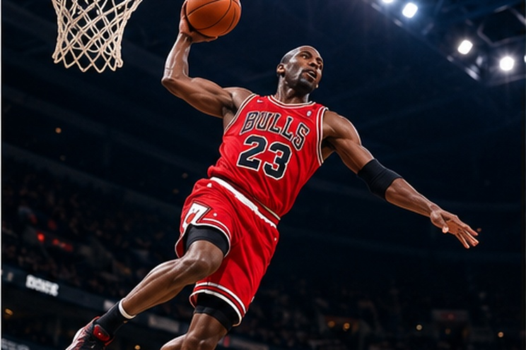

Confira, em primeira mão, todos os lançamentos e detalhes dos novos uniformes que vão vestir os gigantes do esporte!.

O basquete é um esporte coletivo criado em 1891 pelo professor James Naismith, nos Estados Unidos. Seu objetivo é marcar pontos ao arremessar a bola dentro da cesta adversária, que fica a 3,05 metros do chão nas regras tradicionais adultas. Cada equipe possui cinco jogadores em quadra, e a partida exige movimentação constante, passes, dribles, arremessos e estratégias defensivas. Ao longo do tempo, o basquete conquistou popularidade mundial e passou a ser disputado em escolas, clubes e competições profissionais. A modalidade também possui variações, como o basquete de três contra três, conhecido como 3x3. Sua combinação de velocidade, técnica e estratégia faz do esporte uma atividade dinâmica e emocionante.
A prática do basquete proporciona diversos benefícios físicos. Os deslocamentos rápidos, saltos e mudanças de direção ajudam a desenvolver resistência cardiovascular, agilidade, equilíbrio e coordenação motora. O esporte também trabalha os músculos das pernas, dos braços e do tronco, além de estimular a percepção espacial e o tempo de reação. Como é uma atividade coletiva, contribui para a socialização e pode ajudar a reduzir o estresse. Para evitar lesões, é importante realizar aquecimento, utilizar tênis apropriados e aprender a executar corretamente os movimentos. O basquete pode ser praticado por crianças, adolescentes e adultos, desde que as atividades sejam adaptadas à idade, à condição física e à experiência de cada participante.
O basquete exerce forte influência na cultura contemporânea. A NBA, principal liga profissional masculina dos Estados Unidos, tornou-se conhecida internacionalmente por reunir grandes atletas e proporcionar partidas de alto nível técnico. A modalidade também influenciou a música, a moda urbana, os videogames e a publicidade esportiva. Camisas de equipes, tênis e outros produtos relacionados ao basquete são utilizados inclusive por pessoas que não praticam o esporte. No Brasil, a modalidade possui uma história importante, com atletas que representaram o país em competições internacionais. O basquete também é uma ferramenta de inclusão social, pois projetos comunitários podem oferecer atividades esportivas, convivência e oportunidades de desenvolvimento para jovens.
O basquete movimenta grandes quantias de dinheiro por meio de contratos de televisão, patrocínios, venda de ingressos, produtos licenciados e acordos comerciais. Ligas profissionais atraem empresas interessadas em divulgar suas marcas para públicos de diferentes países. Além dos jogadores, o setor gera empregos para técnicos, árbitros, fisioterapeutas, preparadores físicos, administradores e profissionais de comunicação. A infraestrutura das arenas e a realização de eventos também beneficiam serviços de alimentação, hospedagem e transporte. Entretanto, o crescimento econômico precisa ser acompanhado de planejamento e responsabilidade financeira. Investir nas categorias de base e ampliar o acesso às quadras pode ajudar a desenvolver novos talentos e fortalecer a modalidade em regiões onde ela ainda possui pouca estrutura.
O basquete possui competições nacionais e internacionais que reúnem equipes de diferentes níveis. Entre as mais conhecidas estão a NBA, a WNBA, as ligas nacionais e os torneios olímpicos. O basquete feminino tem conquistado maior visibilidade e reconhecimento, tanto pela qualidade técnica das atletas quanto pelo crescimento do público. A WNBA, liga profissional feminina dos Estados Unidos, é um exemplo da expansão comercial e esportiva da modalidade. O basquete também integra os Jogos Olímpicos e possui uma versão 3x3, com partidas mais curtas e apenas três jogadores por equipe em quadra. Essas diferentes formas de competição ajudam a atrair novos praticantes e a tornar o esporte mais acessível.
A temporada 2026–2027 da NBA começou em outubro, trazendo novas disputas entre as principais equipes da liga. Entre as notícias do início da temporada, o jogador Luka Dončić marcou 52 pontos em uma partida contra o Utah Jazz, em 25 de outubro, demonstrando o destaque individual que pode influenciar os resultados das equipes. Outro assunto recente foi a estreia de LeBron James pelo Philadelphia 76ers, em uma partida realizada no início da temporada. Esses acontecimentos mostram como o basquete profissional é acompanhado tanto pelo desempenho coletivo quanto pelas atuações individuais. O início de uma nova temporada também renova as expectativas sobre os candidatos ao título e o desenvolvimento dos jovens jogadores.
O futuro do basquete envolve a evolução das técnicas de treinamento, o uso de dados estatísticos e a ampliação da presença internacional das ligas. A análise de vídeo permite estudar os movimentos dos adversários, enquanto os dados de desempenho ajudam a avaliar a eficiência dos arremessos e das estratégias defensivas. Ao mesmo tempo, a modalidade precisa enfrentar desafios como lesões, pressão psicológica, desigualdade de oportunidades e custos para participar de programas de formação. A ampliação de quadras públicas e projetos escolares pode ajudar mais crianças a conhecer o esporte. O desenvolvimento do basquete depende da combinação entre inovação, formação esportiva, inclusão e valorização dos atletas.
Confira, em primeira mão, todos os lançamentos e detalhes dos novos uniformes que vão vestir os gigantes do esporte!.

O trono dos e-sports tem um novo dono: confira todos os detalhes da vitória monumental que colocou essa equipe histórica no topo do mundo!

Confira como a atual crise de lesões e o calendário apertado estão mudando os rumos do futebol mundial!
Quer enviar uma sugestão de pauta, fazer uma denúncia esportiva, anunciar sua marca ou tirar dúvidas? Nossa equipe está pronta para ouvir você. Entre em contato pelos nossos canais oficiais: